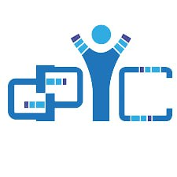
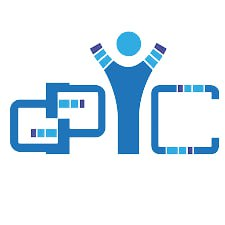

Науковці і інженери активно розробляють концепції міжпланетних колоній для людей. Однією з ідей є використання 3D-друку для будівництва житлових приміщень на Марсі. Такі технології можуть допомогти створити житловий простір, що враховує особливості місцевого матеріалу та атмосфери.
У світі комп'ютерів тривають дослідження в галузі квантових обчислень. Квантові комп'ютери використовують принципи квантової механіки для обробки інформації. Однією з важливих властивостей квантових комп'ютерів є здатність виконувати обчислення паралельно, що може суттєво збільшити швидкість вирішення складних завдань.
В області авіаційних технологій розглядаються можливості створення гіперзвукових пасажирських літаків, які зможуть летіти зі швидкістю вище за швидкість звуку. Такі літаки можуть зменшити час подорожі між країнами і регіонами, зробивши повітряний транспорт ще більш швидким і ефективним.

 
